| 题目 |
答案 |
| 在高速公路变更车道时，应提前开启转向灯，观察情况，确认安全后在变道？ |
正确 |
错误 |
| 将转向灯开关向下拉，右转向灯亮？ |
错误 |
正确 |
| 车辆在抵押登记，备案期间不可以办理转移登记？ |
正确 |
错误 |
| 安装防抱制动装置(ABS)的机动车制动时，制动距离会大大缩短，因此不必保持安全车距？ |
错误 |
正确 |
| 在实线的时候可以转换车道？ |
错误 |
正确 |
| 当你看到黄灯闪烁时，你要怎么办？ |
减速慢行 |
停车确认安全后前行 |
正常前行 |
加速行驶 |
| 当你在行车时听到紧急信号的车，你要怎么做？ |
确认安全后尽快靠最右车道停下 |
确认安全后尽快靠最左车道停下 |
加速前行 |
正常行使 |
| 除非有标志指明，不然在市区，住宅区的最高驾驶速度是多少？ |
30英里 |
20英里 |
25英里 |
35英里 |
| 当红灯亮时，你要怎么做？ |
停车，知道信号灯为绿灯，同时确认安全才前进 |
减速，确认安全后前进 |
加速行驶 |
停车，确认安全后就可以前进 |
| 当驶入高速公路的时候， 你要怎么做？ |
加速达到高速公路的速度，然后驶入高速公路 |
停车，确认安全后进入高速 |
减速，然后驶入高速 |
直接驶入高速 |
| 在双向路上，你如果想左转，你应该在什么位置？ |
靠近中线的车道 |
靠近右线的车道 |
随意在哪条车道都可以 |
只要不在最右车道就行 |
| 在单程路上你想转左之前，你应在路的什么位置？ |
靠近路的左手边 |
靠近路的中间 |
靠近路的右边 |
在路的哪个位置都行 |
| 在十字路口闪着红灯，表示什么？ |
停车，直至安全才前进 |
减速慢行 |
加速前行 |
正常行驶 |
| 在什么情况下，红灯可以左转？ |
在有交警指挥的时候 |
任何时候都不可以 |
确认安全后即可 |
在没用NO TURN ON RED的标志时 |
| 在什么情况下，红灯可以右转？ |
在有交警指挥或者没有NO TURN ON RED 标志时可以右转 |
任何时候都可以 |
任何时候都不可以 |
确认安全后就可以 |
| 当到达十字路口，绿灯刚转黄灯，你应怎样做？ |
停车，如果停车是危险的，前进要加倍小心 |
加速开过去 |
减速开过去 |
停车，确认安全后马上开过去 |
| 某人的驾驶执照被吊销后他 |
在任何情况下都不准驾驶 |
可以申请临时驾照 |
可以继续驾驶 |
在有他人陪伴下可以继续行驶 |
| 当两架车在大约同一时间驶到没有标志的十字路口，哪一架车有优先权？ |
从右方驶来的车辆 |
都有优先权 |
都没有优先权 |
从正面驶来的车辆 |
| 在什么时候需要把车头灯开着？ |
日落前半小时和日出后半小时 |
日落前15分钟和日出后15分钟 |
日落前45分钟和日出后45分钟 |
日落前1小时和日出后1小时 |
| 酒精在人体血液中占什么份量，使你成为危险驾驶者及有罪? |
0.08% |
0.07% |
0.09% |
0.10% |
| 在十字路口，亮红灯并有绿色箭头表示什么？ |
小心向着箭头的方向转，让路于有优先权的车辆及行人 |
可以往箭头方向行驶 |
不可往箭头方向行驶 |
小心向着箭头的方向转，不必让路于其他车辆及行人 |
| 如果交通灯转了，而行人仍然在过马路，谁有优先权？ |
行人 |
车 |
都没有 |
谁先到路口谁有 |
| 如果你置身于交通意外，而当时有人受伤，你要怎么做？ |
立即报告意外于最近的州警察或当地警察 |
立即联系家人朋友前来 |
立即联系保险公司 |
立即联系急救车 |
| 如果你被控醉酒行车，第一次会被罚停牌多久？ |
6个月 |
9个月 |
12个月 |
3个月 |
| 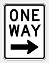 |
单行道 |
双行道 |
左转 |
右转 |
| 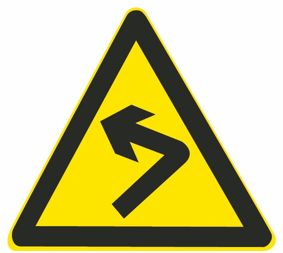 |
向左急转弯 |
向右急转弯 |
向左绕行 |
连续弯道 |
 |
环岛 |
右侧通行 |
左侧通行 |
右转 |
| 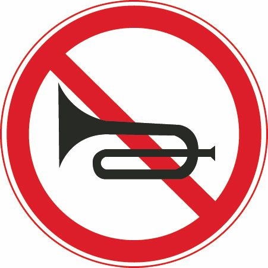 |
禁止按喇叭 |
断续按喇叭 |
减速按喇叭 |
禁止长时间按喇叭 |
 |
双向路 |
单向路 |
减速 |
分离车道 |
| 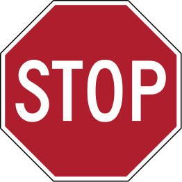 |
停车 |
合并车道 |
校区人行道 |
靠右行车 |
| 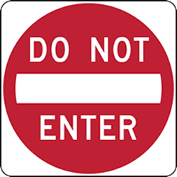 |
禁止驶入 |
铁路 |
靠右行驶 |
合并车道 |
| 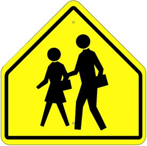 |
校区 |
减速 |
让路 |
住宅区 |
 |
前方道路合并 |
停车 |
前面有坡路 |
左转 |
 |
铁路 |
合并车道 |
靠右行车 |
单行路 |
 |
前方路滑 |
前方路窄 |
合并车道 |
校区 |
| 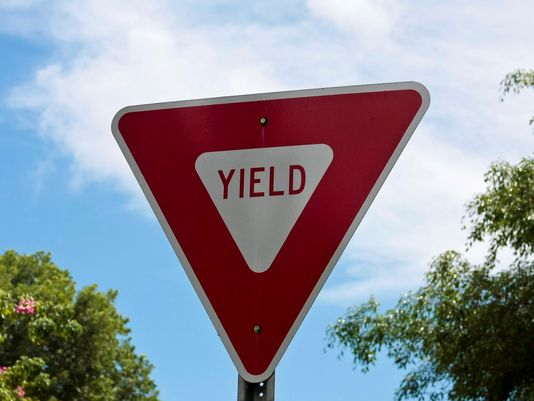 |
让路 |
停车 |
禁止驶入 |
禁止右转 |
 |
禁止右转 |
可以右转 |
只能右转 |
左转 |
| 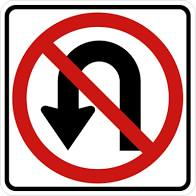 |
禁止调头 |
前方可调头 |
禁止左转 |
禁止右转 |
| 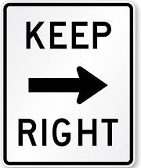 |
靠右行驶 |
靠左行驶 |
不能靠左 |
不能靠右 |
 |
前方道路施工 |
禁止驶入 |
前方道路关闭 |
前方绕行 |
 |
前方道路关闭 |
前方道路施工 |
前方绕行 |
禁止驶入 |
| 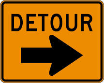 |
车辆改道绕行 |
前方道路施工 |
前方道路关闭 |
禁止驶入 |
| 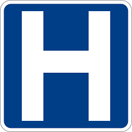 |
医院 |
高速 |
信息中心 |
加油站 |
| 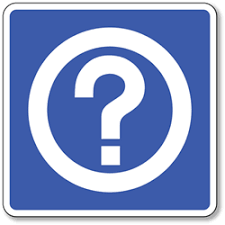 |
信息中心 |
医院 |
高速 |
加油站 |
| 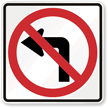 |
禁止左转 |
禁止右转 |
左转 |
右转 |
| 如拒接作酒精测试是如何处罚？ |
立即被取消驾驶执照. |
不会受到处罚 |
罚款300美元 |
罚款并拘押15天 |
| 酒对驾驶人有何影响？ |
酒会使驾驶人反应迟缓和影响判断力，影响听觉、视力、为避免醉酒驾驶，唯一的办法是酒后不要驾驶. |
少量酒不会有影响 |
有影响，但不会影响开车 |
使你更加精神 |
| 1.5oz的威士忌酒、12oz的啤酒或 3至5oz的葡萄酒中各含有多少酒精？ |
0.5oz |
0.8oz |
1oz |
1.2oz |
| 怎样可使你很快清醒？ |
不可能，酒精一旦进入你的血液，是没有一个快的方法使其消除，新陈代谢必须经过 1 小时 15 分钟时间来消解每一安士酒精 |
可以通过运动使你快速清醒 |
可以通过喝水使你快速清醒 |
可以通过喝牛奶使你快速清醒 |
| 什么是BAC？ |
是你血液中酒精的含量 |
是你胃中酒精的含量 |
是你喝的酒的总量 |
是你喝酒量的上限 |
| 初次醉酒驾驶的处罚是什么？ |
罚款$500-$5000,入狱最高2年半,吊销驾驶执照一年 |
罚款$500-$4000,吊销驾照半年 |
罚款$1500,吊销驾照9个月 |
罚款$3000,吊销驾照18个月 |
| 迷幻药是如何影响驾驶人？ |
影响驾驶人的夜间视觉和缓慢驾驶人对危险情况的反应能力 |
影响驾驶人的白天视觉 |
降低驾驶人对危险情况的反应能力 |
有影响，但不会影响开车 |
| 什么是基本速度法？ |
驾驶速度必须安全地顾及到行人，道路情况和其它交通 |
驾驶速度必须安全，不需要顾及行人 |
驾驶速度尽量安全，且需要顾及到行人和其它交通 |
驾驶速度必须低于限速，且需要顾及到行人 |
| 在学校区，什么速度是不合理？ |
时速超过20英里即不合理 |
时速超过25英里即不合理 |
时速超过30英里即不合理 |
时速超过35英里即不合理 |
| 如果在高速公路错过了你的出口，你应该怎样？ |
你应该继续前进直到下一个出口，从不要在高速公路后退 |
你应该减速停到安全车道，然后想办法下出口 |
如果车辆不多，可以试着倒车然后下出口 |
直接倒车强行下出口 |
| 如果你准备超车，必须看清楚前方多远？ |
400英尺或更远 |
300英尺或更远 |
350英尺或更远 |
250英尺或更远 |
| 如果有人在你正在驾驶的街道上行走，你应怎样？ |
慢下来，有必要时停车.行人有优先权 |
在行人到你车前，快速开过去 |
按喇叭提醒他们退回行人道 |
按喇叭提醒他们快速穿过街道 |
| 一辆学校巴士闪亮红灯，你必须怎样？ |
必须停车，直到学校巴士关闭闪红灯 |
可以减速慢行，慢慢通过学校巴士 |
按喇叭，提示学校巴士司机你要通过 |
无需担心，可正常行驶通过 |
| 什么人会使用白色手杖？ |
盲人 |
聋哑人 |
行动不便的人 |
年纪大的人 |
| 火车路轨横过的路牌是什么形状？ |
圆形 |
八边形 |
四边形 |
三角形 |
| 礼让的路牌是什么形状？ |
倒三角形 |
四边形 |
圆形 |
八边形 |
| 停车的路牌是什么形状？ |
八边形 |
圆形 |
三角形 |
四边形 |
| 停车路牌是什么颜色？ |
红色 |
蓝色 |
黄色 |
白色 |
| 当你将车辆卖出，你的注册证还有效吗？ |
已无效，如无新注册证是不可以驾驶该车 |
已无效，但仍可驾驶该车 |
有效，直到该车的新持有者注册为止 |
有效，直到注册证有效期过为止 |
|
|
|
|
|